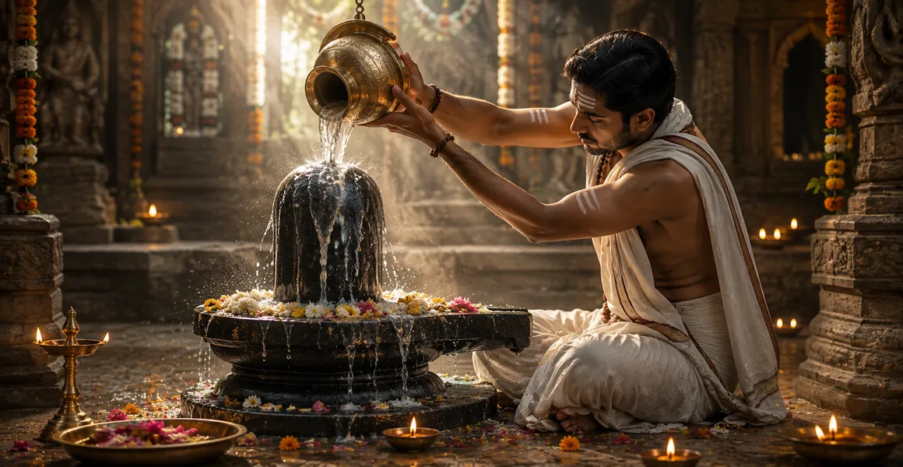

Pure Water
পবিত্র জল
Water is the simplest and most universal offering in Shiva worship. Its flowing movement evokes purity, renewal and surrender.

Abhishekam is one of the most cherished expressions of devotion to Lord Shiva. In this sacred practice, the Shiva Linga is lovingly bathed with pure and suitable offerings while the devotee remembers Mahadeva with prayer, mantra and a surrendered heart.
The flowing offering carries a beautiful devotional meaning. It reminds the devotee that the heart, thoughts, desires and actions can all be placed before Shiva. The outer act of bathing the Linga becomes an inner act of surrender and remembrance.
Different offerings are used in devotional traditions. Their deeper value lies not only in the substance itself, but in the reverence, purity and sincerity with which the offering is made.
Water is the simplest and most universal offering in Shiva worship. Its flowing movement evokes purity, renewal and surrender.
Milk is traditionally offered in many forms of Shiva worship. It is approached as a devotional expression of purity and care.
Sacred bilva leaves are closely associated with Lord Shiva and can accompany Abhishekam as a loving offering after the sacred bathing.
Honey is included in some traditional devotional practices. Its sweetness can remind the devotee to cultivate sweetness in speech, conduct and the heart.
Yogurt is used in some traditional forms of devotional bathing. The offering is made with reverence and a peaceful heart.
Fragrance, flowers and other suitable offerings can surround Abhishekam with an atmosphere of beauty, reverence and devotion.
The sacred remembrance of ॐ नमः शिवाय can accompany the offering and help keep the mind centred on Mahadeva.
A lamp offered after worship can become a reminder of the inner light that devotion seeks to awaken.
Prayer gives the ritual its personal voice. The devotee can place gratitude, hopes and worries before Shiva with humility.
Flowers express beauty and love. Their presence reminds the devotee to make the heart itself an offering to Mahadeva.
Fragrance can help create a quiet devotional atmosphere and encourage the mind to become still and attentive.
The deepest offering is the heart itself. Abhishekam becomes a sacred remembrance that everything may ultimately be surrendered to Mahadeva.
The sacred act of offering becomes most beautiful when it transforms something within the devotee.
The flowing offering can remind the devotee to release what weighs upon the heart and return to inner clarity.
Standing before Shiva with an offering teaches the heart to approach the Divine without pride.
Repeating a sacred mantra while making an offering can help gather scattered attention and bring the mind into a quieter state.
Offering becomes a way of acknowledging the blessings that have already entered the devotee's life.
The flowing water can become a gentle reminder that attachment, fear and unnecessary burdens can be placed at Shiva's feet.
At its deepest level, Abhishekam is a loving gesture of placing the self before Mahadeva with faith and devotion.
Keep the worship area clean and peaceful, preparing the heart as carefully as the outer space.
Begin with prayer or the remembrance of Shiva before making the sacred offering.
Make each offering calmly and respectfully, allowing the mind to remain with the sacred action.
Let the name or mantra of Shiva accompany the flowing offering and steady the attention of the heart.
Alongside every physical offering, place your gratitude, love and sincere prayer before Mahadeva.
Sit quietly after the worship and carry the remembrance of Shiva into the rest of the day.
The sacred flow of Abhishekam can become a doorway into deeper remembrance and disciplined devotion. Continue to the next page and explore Lord Shiva Sadhana.
🕉️ Explore Lord Shiva Sadhana